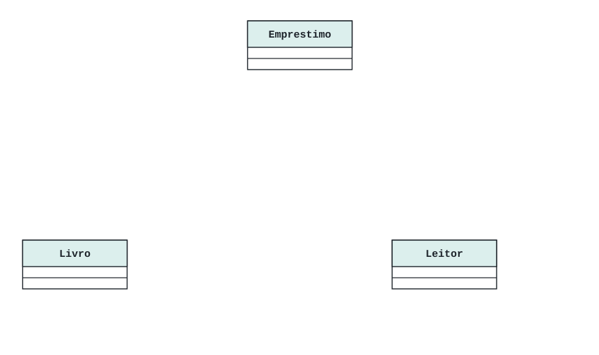
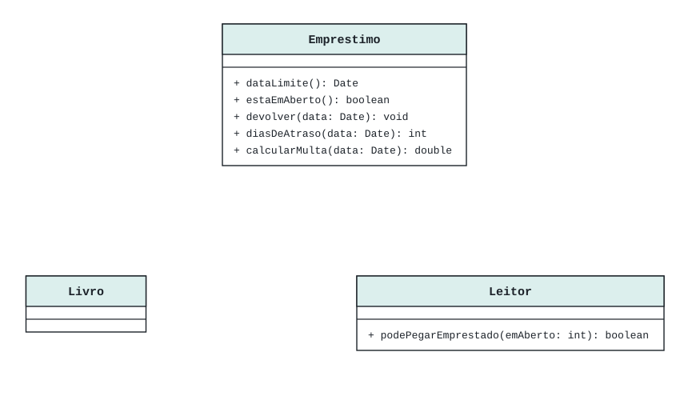
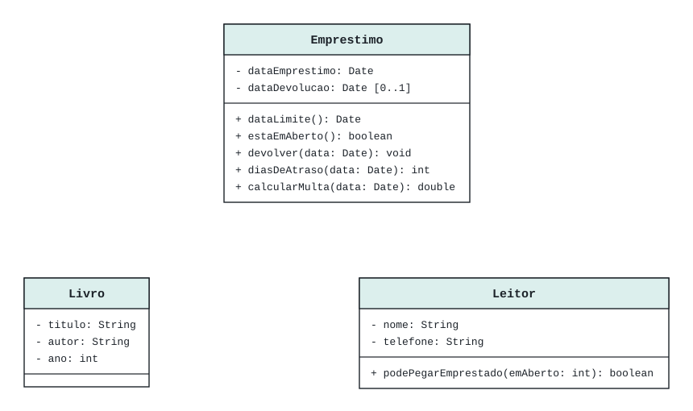
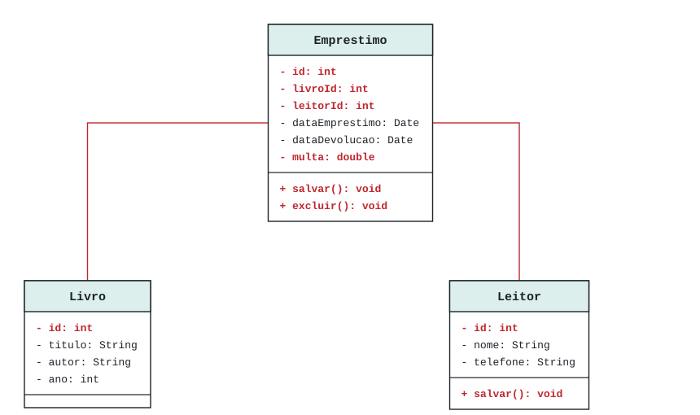
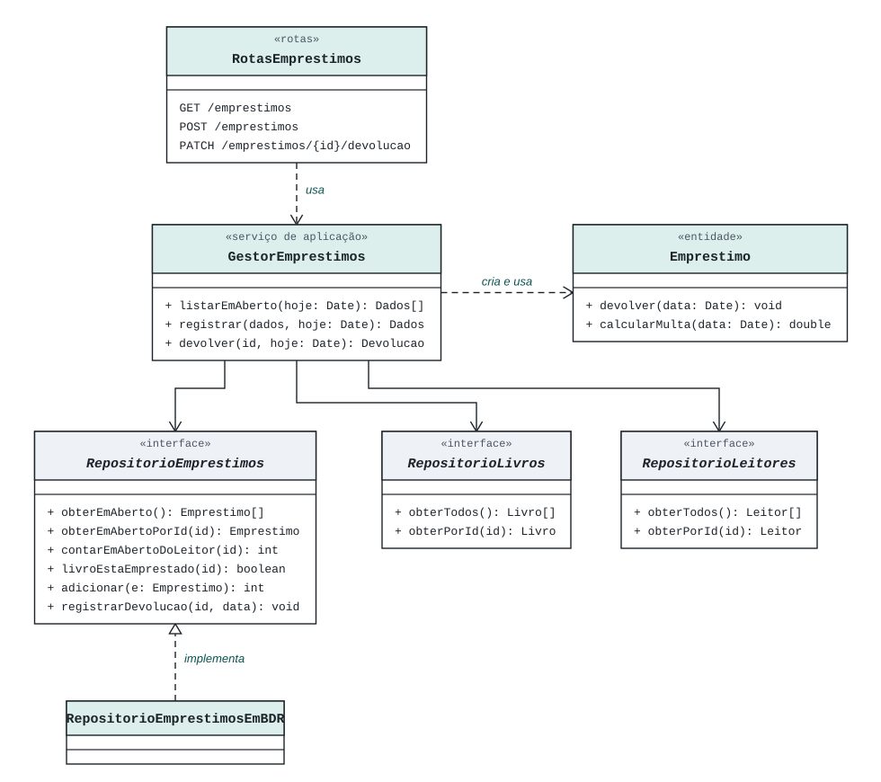
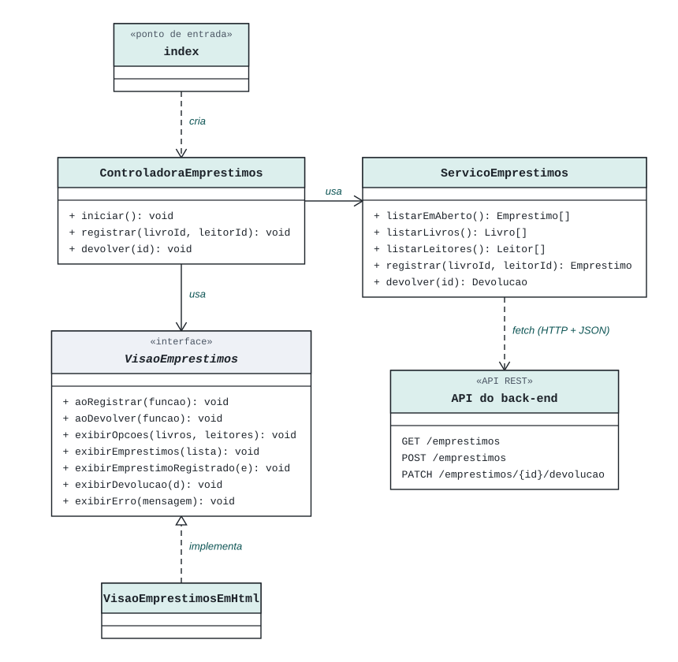

Etapa 2
Modelagem e diagramas
Como sair do minimundo e chegar ao diagrama de classes do domínio e, depois, aos diagramas da arquitetura que orientam o código.
2.1 Encontrar as entidades no minimundo
Leia o minimundo procurando os substantivos: as coisas de que o negócio fala. Cada candidato vira uma classe, um atributo, um comportamento ou é descartado. Decida olhando para o escopo: o que não participa de nenhuma funcionalidade fica de fora.
| Candidato | Decisão | Por quê |
|---|---|---|
| empréstimo | Classe Emprestimo | Liga um livro a um leitor e concentra as regras de prazo, multa e devolução. |
| livro | Classe Livro | Tem dados próprios e é o que se empresta. |
| leitor | Classe Leitor | Tem dados próprios e uma regra: o limite de empréstimos em aberto. |
| título, autor, ano | Atributos de Livro | Descrevem o livro; não têm dados nem regras próprias. |
| nome, telefone | Atributos de Leitor | Descrevem o leitor. |
| data do empréstimo | Atributo de Emprestimo | É a base para calcular o prazo e a multa. |
| prazo, multa, atraso | Comportamentos de Emprestimo | São calculados a partir das datas; não precisam ser guardados. |
| biblioteca | Descartado | É o próprio negócio que o sistema atende; não há várias bibliotecas. |
| caderno | Descartado | É o jeito atual de trabalhar, que o sistema vai substituir. |
| bairro, moradores | Descartado | Não aparecem em nenhuma funcionalidade do escopo. |
2.2 Montar o diagrama em quatro passos
O diagrama cresce aos poucos. Em cada passo, a imagem mostra o que foi acrescentado.
Desenhe só as entidades
Uma caixa para cada classe encontrada, com o nome no singular e em PascalCase (
Emprestimo, nãoemprestimos). Ainda não pense em atributos.
Acrescente os comportamentos do negócio
Pergunte o que cada entidade faz ou sabe responder no negócio: o empréstimo sabe a data limite, pode ser devolvido e calcula a multa; o leitor sabe se pode pegar mais um livro. Operações como
salvar()oubuscarTodos()são do sistema, não do negócio, e não entram aqui.
Sintaxe:
+ devolver(data: Date): void— o+indica visibilidade pública, depois vêm o nome, os parâmetros com tipo e o tipo de retorno.Acrescente os atributos que sustentam os comportamentos
Para calcular a multa, o empréstimo precisa da data em que foi feito; para saber se está em aberto, da data de devolução, que pode não existir — por isso
[0..1]. Depois, acrescente os dados que o negócio registra: título, autor e ano do livro; nome e telefone do leitor. Não crie o atributomulta: ele repetiria o quecalcularMulta()já responde.
Sintaxe:
- dataEmprestimo: Date— o-indica visibilidade privada, seguida do nome e do tipo.Ligue as entidades com associações
O empréstimo precisa conhecer o livro e o leitor, então as setas saem de
Emprestimo. O livro não precisa conhecer seus empréstimos para cumprir nenhuma regra, por isso não há seta no sentido contrário. Cada ligação recebe um rótulo de leitura com a direção (“Emprestimo refere-se a Livro”) e a multiplicidade: um empréstimo refere-se a exatamente1livro, e um livro aparece em vários (*) empréstimos ao longo do tempo.
2.3 Erros comuns
O diagrama abaixo tem os erros que mais aparecem. Tudo o que está em vermelho deveria sair ou ser feito de outro jeito.

id,livroIdeleitorIdsão colunas do banco. No modelo de classes, o empréstimo se liga ao livro e ao leitor pela associação, não por números.multacomo atributo duplica o que pode ser calculado a partir das datas. Com as duas coisas, elas podem discordar.salvar()eexcluir()tratam de armazenamento, responsabilidade dos repositórios, e não de regras do negócio.- Linhas sem seta, rótulo e multiplicidade não dizem quem conhece quem, como se lê a relação nem quantos objetos participam.
dataDevolucaosem[0..1]esconde que um empréstimo pode estar em aberto.
Sinal de alerta
Se o diagrama de classes parece um diagrama de tabelas (entidade-relacionamento), provavelmente está descrevendo o banco de dados, e não os objetos e seus comportamentos. Recomece pelo passo 1.
2.4 Da modelagem para a arquitetura
O modelo essencial descreve o negócio. Para programar, as responsabilidades são divididas em partes, e cada parte vira uma classe ou arquivo. Os diagramas de arquitetura são parciais: mostram só as classes de uma funcionalidade — aqui, a de empréstimos.
| Parte | Responsabilidade | No projeto |
|---|---|---|
| Visão | Mostra os dados e captura as ações do usuário. É a única parte que mexe no HTML. | VisaoEmprestimosEmHtml |
| Controladora | Recebe as ações da visão, chama o serviço e manda a visão exibir o resultado. | ControladoraEmprestimos |
| Serviço do front-end | Faz as requisições fetch para a API. | ServicoEmprestimos |
| Rotas | Recebem a requisição HTTP, chamam o gestor e devolvem JSON. | rotas / RotasEmprestimos |
| Gestor | Serviço de aplicação: coordena o caso de uso usando repositórios e entidades. | GestorEmprestimos |
| Repositório | Interface que define como os dados são lidos e gravados. | RepositorioEmprestimos |
| Repositório em BDR | Implementa a interface com o banco de dados relacional. | RepositorioEmprestimosEmBDR |
| Entidade | Guarda os dados e as regras do negócio. | Emprestimo, Livro, Leitor |
Back-end

Front-end

Como ler as ligações
- Linha contínua com seta aberta: associação — a classe guarda uma referência à outra e a usa.
- Linha tracejada com seta aberta: dependência — a classe usa ou cria a outra só durante uma operação.
- Linha tracejada com triângulo vazado: realização — a classe implementa a interface.
- Texto entre «»: estereótipo, que diz o papel da caixa, como
«interface»ou«entidade». - Em JavaScript não existem interfaces na linguagem, mas o diagrama continua valendo como contrato: a classe precisa ter os mesmos métodos.
2.5 Onde guardar os diagramas
Guarde o minimundo e os diagramas na pasta docs/, na raiz do projeto. Assim eles entram no Git junto com o código
e são atualizados quando o projeto muda. No explorador à esquerda, abra a pasta docs para ver cada arquivo.
biblioteca-comunitaria/ ├── backend/ ├── frontend/ └── docs/ ├── minimundo.md minimundo, escopo e regras └── diagramas/ ├── modelo-essencial.svg modelo de domínio ├── arquitetura-backend.svg arquitetura parcial do back-end └── arquitetura-frontend.svg arquitetura parcial do front-end
Os diagramas podem ser feitos em ferramentas como Astah, draw.io ou PlantUML. Exporte a imagem (PNG ou SVG) para docs/diagramas
e guarde, na mesma pasta, o arquivo editável da ferramenta (como .asta ou .drawio), para poder alterar depois.